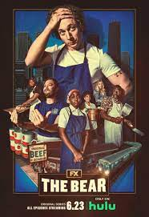
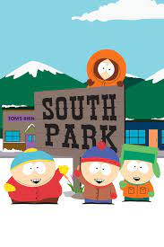
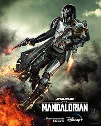

The bear

No apta para cardíacos
Sinopsis: Mientras Carmy lucha por transformar la tienda familiar de bocadillos y a sí mismo,
trabaja
junto a un equipo de rudos que al final se revela como su familia elegida.
Primer episodio: 23 de junio de 2022 (Estados Unidos)
Empresa productora: FX Productions
Creado por: Christopher Storer
South park

La mejor sátira jamás creada
Sinopsis: Una serie de dibujos animados que no es para niños. De hecho, su objetivo parece ser
el
ofender a la mayoría de personas posibles, mientras presenta las aventuras de Stan, Kyle, Kenny
y
Cartman. El programa ha imitado a Saddam Hussein, Osama bin Laden, políticos y celebridades
prepotentes,
a propósito, Kenny es asesinado en varios episodios.
Cantidad de episodios: 323
Creadores del programa: Trey Parker, Matt Stone
Cantidad de temporadas: 26
The mandalorian

El camino así es.
Sinopsis: Las aventuras de Mando, un pistolero solitario y cazarrecompensas que se abre paso a
través de
las fronteras más remotas de la galaxia, lejos de la jurisdicción de la Nueva República.
Primer episodio: 12 de noviembre de 2019 (Estados Unidos)
Cantidad de episodios: 17
Cantidad de temporadas: 3
Basado en: Star Wars; de George Lucas